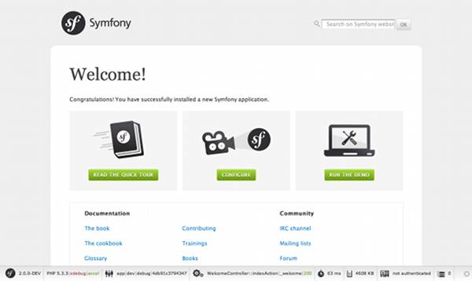

Le but de ce chapitre est de vous permettre de démarrer avec une application construite avec Symfony. Heureusement, Symfony propose un système de « distributions ». Ce sont des projets Symfony fonctionnels « de départ » que vous pouvez télécharger et qui vous permettent de développer immédiatement.
Tip
Si vous cherchez des instructions sur la meilleure façon de créer un nouveau projet et de le stocker dans un gestionnaire de versions, lisez Utiliser un Gestionnaire de Versions.
Tip
Premièrement, vérifiez que vous avez installé et configuré un serveur web (comme Apache) avec PHP 5.3.2 ou supérieur. Pour plus d’informations sur les prérequis Symfony2, lisez le chapitre requirements reference.
Les « distributions » Symfony2 sont des applications entièrement fonctionnelles qui incluent les librairies du coeur de Symfony2, une sélection de bundles utiles, une arborescence pratique et une configuration par défaut. Quand vous téléchargez une distribution Symfony2, vous téléchargez un squelette d’application qui peut être immédiatement utilisé pour commencer à développer votre application.
Commencez par visiter la page de téléchargement de Symfony2 à http://symfony.com/download. Sur cette page, vous verrez la Symfony Standard Edition, qui est la principale distribution Symfony2. Vous devrez alors faire deux choix :
Téléchargez l’une des archives quelque part dans le dossier racine de votre serveur web et extrayez là. Depuis une interface de commande UNIX, cela peut être fait avec l’une des commandes suivantes (remplacez ### par le nom du fichier) :
# pour l'archive .tgz
tar zxvf Symfony_Standard_Vendors_2.0.###.tgz
# pour l'archive .zip
unzip Symfony_Standard_Vendors_2.0.###.zip
Lorsque vous aurez fini, vous devriez avoir un répertoire Symfony/ qui ressemble à ceci :
www/ <- votre dossier racine
Symfony/ <- l'archive extraite
app/
cache/
config/
logs/
src/
...
vendor/
...
web/
app.php
...
Finallement, si vous avez téléchargé l’archive « sans vendors », installez les en lancant la commande suivante depuis une invite de commande :
php bin/vendors install
Cette commande télécharge toutes les librairies vendor nécessaires - incluant Symfony - dans le répertoire vendor/. Pour plus d’informations sur la façon dont les librairies tierces sont gérées dans Symfony2, lisez le chapitre «Managing Vendor Libraries with bin/vendors and deps».
Maintenant, toutes les librairies tierces nécessaires sont dans le répertoire vendor/. Vous avez également une application par défaut installée dans le répertoire app/ et un exemple de code dans le répertoire src/.
Symfony2 est livré avec un testeur de configuration de votre serveur afin de vérifier que votre serveur web et PHP sont bien configurés pour utiliser Symfony. Utilisez l’URL suivante pour vérifier votre configuration :
http://localhost/Symfony/web/config.php
S’il y a des problèmes, corrigez les maintenant avant de poursuivre.
Lorsque tout est bon, cliquez sur « Go to the Welcome page » pour afficher votre première « vraie » page Symfony2 :
http://localhost/Symfony/web/app_dev.php/
Symfony2 devrait vous accueillir et vous féliciter pour tout le travail accompli jusqu’ici !
Maintenant que vous avez une application Symfony2 fonctionnelle, vous pouvez commencer à développer ! Votre distribution devrait contenir un exemple de code. Vérifiez le fichier README.rst inclu avec la distribution (ouvrez le en tant que fichier texte) pour savoir quel exemple de code est inclu avec votre distribution et savoir comment le supprimer par la suite.
Si vous découvrez Symfony, jetez un oeil au chapitre « La création de pages avec Symfony2 », où vous apprendrez comment créer des pages, changer la configuration et faire tout ce que vous aurez besoin de faire dans votre nouvelle application.
Si vous utilisez un système de contrôle de version comme Git ou Subversion, vous pouvez le configurer et commencer à commiter votre projet normalement. La Symfony Standard edition est le point de départ de votre nouveau projet.
Pour des instructions spécifiques sur la meilleur façon de gérer votre projet avec git, lisez le chapitre How to Create and store a Symfony2 Project in git.
Si vous avez téléchargé l’archive sans vendors, vous pouvez ignorer tout le répertoire vendor/ en toute sécurité et ne pas le commiter. Avec Git, cela se fait en créant le fichier .gitignore et en y ajoutant la ligne suivante:
vendor/
Maintenant, le répertoire vendor ne sera pas commité sur votre système de gestion de code. C’est plutôt bien (en fait c’est génial !) car lorsque quelqu’un clone ou récupère le projet, il lui suffit de lancer la commande php bin/vendors install pour récupérer toutes les librairies nécessaires.